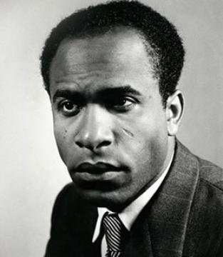

Decolonization is the process by which colonies gain independence from colonial rule and become self-governing. It often involves political, economic, and cultural shifts to remove the influence of the colonizing power.
Dane Kennedy talks about 4 waves of decoloniaztion. He also argues that the nation state emerged as a major alternative to the empires as polities based on traditional legitimacy, hierarchies of imperial subjects, and colonialism.
Franz Fanon is a key theoretician of the third wave. His key work is Les Damnés (The Wretched of the Earth). He argues that no one is dispensable. The choice concerning violence that the colonized native must make, in Fanon’s view, is between continuing to accept it—absorbing the abuse or displacing it upon other members of the oppressed native community—or taking this foreign violence and throwing it back in the face of those who initiated it. Fanon’s consistent existentialist commitment to choosing one’s character through one’s actions means that decolonization can only happen when the native takes up his or her responsible subjecthood and refuses to occupy the position of violence-absorbing passive victim. The Algerian revolution against the French imperial masters is the key case he discusses in his works. Gillo Pontecorvo's Battles of Algiers (1966) provides a visualization of Fanon's decolonization argument.
In Imagined Communities, Benedict Anderson defines nation as the following: "regardless of the actual inequality and exploitation that may prevail in each, the nation is always conceived as a deep, horizontal comradeship. Ultimately it is this fraternity that makes it possible, over the past two centuries, for so many millions of people, not so much to kill, as willingly to die for such limited imaginings."